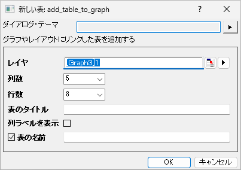
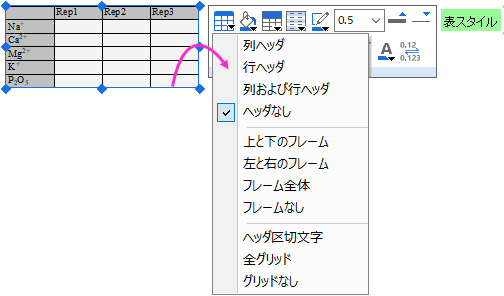

グラフに表を挿入する
Graph-InsertTable
新規リンクテーブルを追加
グラフやレイアウトウィンドウに空のテーブルを追加する手順：
- グラフにオブジェクトを追加ツールバーにある新規リンクテーブルボタン
 をクリックします。
をクリックします。
または、
- グラフレイヤの内側で右クリック（もしくはレイアウトの空白部分を右クリック）してコンテキストメニューから新しい表...を選択します。
- add_table_to_graphダイアログが開き、表の列数と行数、表のタイトルなどを指定します。OKボタンをクリックしてウィンドウにこの新しい表を追加します。
-

- 表オブジェクトをダブルクリックすることで編集できます。ドッキングされたツールバーやミニツールバーを使うことで、表のスタイルを変更したりデータを入力できます。
詳細は、Xファンクションadd_table_to_graphを参照してください。
コピーペーストでテーブルを追加
ワークシート値（分析レポートシートからの値を含む）の範囲をコピーして、Originグラフに貼り付けることができます。 埋め込まれた表は、プレゼンテーションや出版用にフォーマットすることができます。
- 分析レポートシートのレポートテーブルのセルを含む、任意のワークシートのセルの範囲をコピーして、テーブルとしてグラフに貼り付けることができます。
- CTRLキーを使ってマウスでセルをクリックすれば、非連続なデータを選択できます。
- テーブルの内容は動的に元データとリンクしています。 元データで変更すると埋め込まれた表にも反映されます。
- テーブルの内容はスタイルと書式ツールバーのボタンを使って整えることができます。
- グラフウィンドウに複数のテーブルを挿入することができます。
- ワークシートもしくは分析レポートシートのセルを選択します。レポートテーブル全体を（分析レポートシートから）コピーするには、テーブルを右クリックして表のコピーを選択します。
- 表を貼り付けるには、ターゲットグラフまたはレイアウトページをクリックしてCTRL-Vを押すか、右クリックして貼り付け、リンクを貼り付け、リンクを転置して貼り付けを選択します。

分析結果のレポート表を追加

Originの分析ツールのほとんどは、レポート表を分析結果のプロットに追加することをサポートしています (例: 線形フィットツールの出力タブ)。レポート表を追加する場合、表中の値ダイアログを開き、表示させる値を追加、削除、再配置することで、表の内容を変更できます。
いったん表が追加されたあとユーザは次の方法でレポートテーブルの編集を続けることができます。
- ソースグラフまたは分析レポート シートに埋め込まれたグラフのレポート テーブルをダブルクリックすると、テーブル ウィンドウが開きます。ここでは、書式とスタイルのツールバーのボタンを使用してテーブルの外観を変更できます (ヒント： 完了したら、テンプレートのテーブルの更新ボタンをクリックしてください。そうしないと、変更が適用されません)。
- または、最新の Origin バージョンのユーザーは、ミニ ツールバーボタンを使用してテーブルの見た目を変更できます (ヒント：テーブルをクリックして選択すると、ミニ ツールバーが表示されます)。
追加情報は次のテーブルの編集のセクションをご覧ください。
テーブルの編集
一般的なスタイル設定の場合、以下で説明するように、テーブルをダブルクリックしてポップアップウィンドウを開く必要はありません。グラフまたはレイアウトウィンドウでテーブルオブジェクトを選択し、ミニツールバーボタンを使用してテーブルを編集するだけです。

Note: グラフ上の表をクリックしてハンドルをドラッグし、表のサイズを変更できます。表のサイズが変わると、フォントサイズは自動的に調整されます。
表上でダブルクリックして編集モードにします。
- ワークシートまたは分析レポートシートから値をコピーし、貼り付けまたはリンク貼り付けでデータをテーブルに貼り付けます。
- 列ラベル行情報を含むワークシート値の範囲をコピーするには、以下のGIF画像をしてください。
- もしくは、テーブルセルに直接入力することもできます。
- このテーブル編集モードでは、書式およびスタイルツールバーを使用して、テキスト フォント、前景色と背景色の変更、グリッド線の太さの増加など、選択内容のスタイルを設定できます。
- 変更を行ったら、必ずポップアップのテーブルの更新ボタンをクリックしてください。

 | 凡例シンボルをグラフの表に挿入できます。
- ダブルクリックして表の編集モードにします。
- テーブルのセルを右クリックし、セルのフォーマットを選択します。
- ダイアログのリッチテキストオプションにチェックを付け、OKをクリックします。
- セルに以下のプロット凡例シンボルの表記を入力します。
\l(1) // 1つ目のプロットの凡例シンボル
\l(2) // 2つ目のプロットの凡例シンボル
\l([%H]1!1)// レイヤ1の1つ目のプロットの凡例シンボル
\l([%H]1!2)// レイヤ1の2つ目のプロットの凡例シンボル
\l([%H]2!1)// レイヤ2の1つ目のプロットの凡例シンボル
\l([%H]2!2)// レイヤ2の2つ目のプロットの凡例シンボル
|